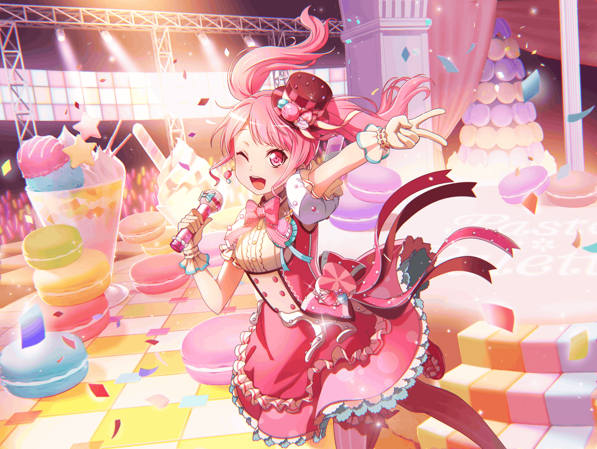

彩
きらーん！
彩
はう～ん
彩
きゃぴきゃぴーん♪
彩
……うーん、
ちょっと違うかな～
彩
ここはもうちょっと、
可愛くしないとだよね
彩
せーの
彩
きゃぴりんっ♪
彩
うんうん、いい感じ！
……って、あれ？
彩
きゃー！？
{{userName}}さん！
彩
鏡に誰かうつってると思ったら、
いたんですねっ。
び、びっくりした～
彩
うぅ……見られてたって思うと、
今になって恥ずかしさが……
彩
ええと、今のは、
個人的に、可愛いポーズの練習をしてたんです
彩
え？ 頑張ってて偉い、ですか？
彩
そ、そんなことないです！
彩
私はアイドルでプロですから、
これくらいは頑張らないと！
彩
それにこのアイドルポーズは研究生時代から……
彩
いえ、アイドルに憧れるようになった小学生時代から、
ずっとやってたんです！
彩
だからこれは、
日課みたいなところもあるんですよね
彩
え？ ならとびきりのアイドルポーズをやってみせてほしい……？
彩
とびきりのですか……
わ、わかりました！
彩
ではいきますよ！
彩
きゃるる～んっ♪♪
彩
…………
彩
あ、あれ？
彩
きゃ、きゃるる～んっ♪♪
彩
ちょっと、
なんで固まるんですか～！？
彩
……予想以上にダサくて？
彩
そんなにダサいですか！？
うぅ、みんな、そう言うんだから……
彩
前にみんなで練習したときも、
同じこと言われたんですよね……
彩
あっ、今日はひとりですけど、
結構みんなでも練習するんですよ
彩
私以上にみんな、練習や特訓を頑張ってて……
彩
一緒に練習してると、
私も負けてられないって思って、
つい熱が入っちゃうくらいです
彩
こうして、
個人練習もかかせないくらいに！
彩
だから私がこうやって頑張れるのも、
本当に、みんなのおかげなんですよね
彩
私のポーズはセンスがないって
よく言われちゃいますけど……
彩
でも、小さい頃から、
夢に向かって頑張ってきた証しのような気もして……
彩
ちょっとだけ、
愛着があったりもするんです
彩
日菜ちゃんには、
別のがいいって言われたり……
彩
イヴちゃんには、
荒々しいブシドー的なポーズって、
勘違いされちゃったりもするけど……
彩
それでも、このセンスのなさも含めて、
ずっと積み上げてきたものだから……
彩
私らしさなのかもって思うんです
彩
そういう自分らしさを意識できるのも……
みんなと会えたおかげかなって、
あらためて思います！
彩
だから私は、
自分らしいアイドルを目指して
これからも、みんなと一緒に頑張っていきます！
彩
あ、それとですね
彩
もちろん、
その、みんな、の中には……
彩
{{userName}}さん
のことも含まれてますからね！
彩
こうして練習を見に来てくれたり、
アドバイスしてくれたり……
彩
こういう他愛のないことでも、
ちゃんと聞いてくれたり……
彩
{{userName}}さんには、
たくさん助けられてるんです
彩
だからこれからも、
私のことを……
彩
いえ、私達のことを、
見守っていてくださいね！
彩
{{userName}}さんが
頑張ってくれてる分、
私達も、精一杯頑張ります！
彩
……はい、約束です！
彩
あ、もっとアイドルらしく
言った方がいいですよね！
彩
ええと……
彩
約束だゾ♪
彩
…………
彩
だ、だからこのセンスの無さも、
私らしさなんです……！